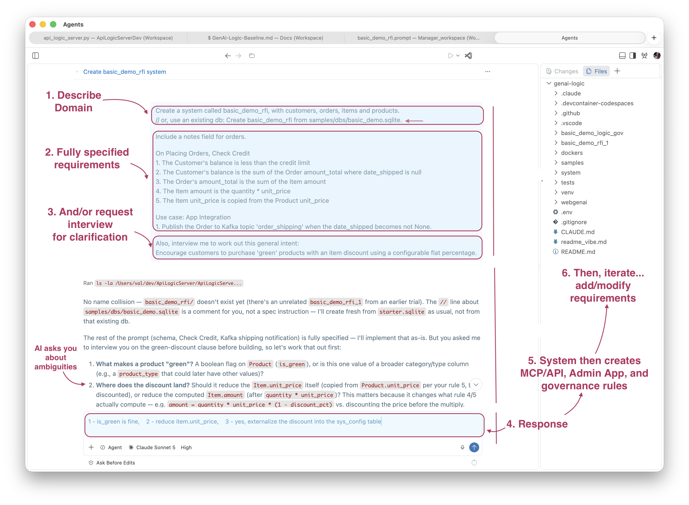
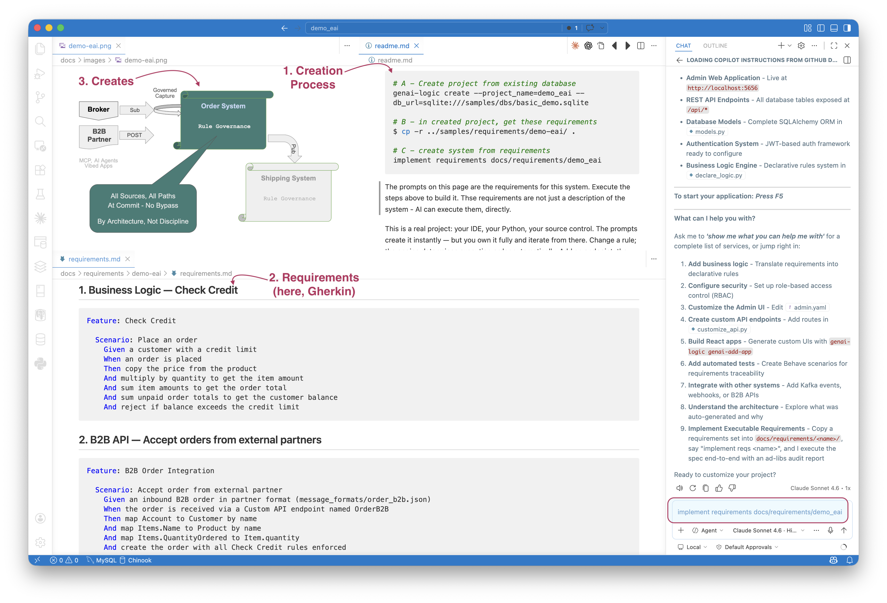
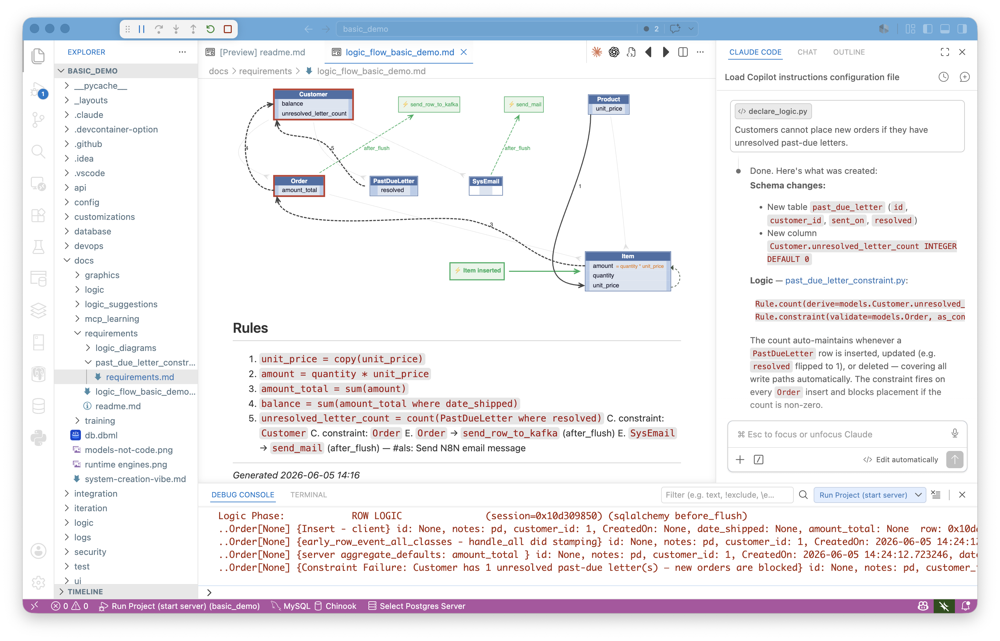
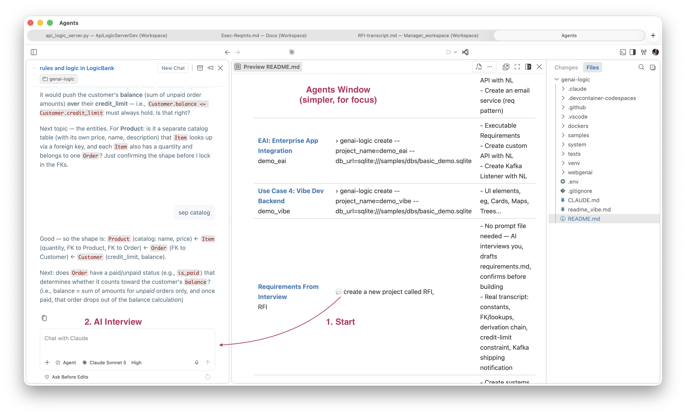
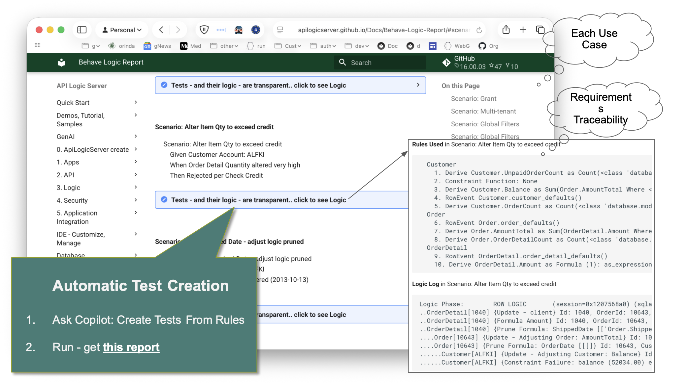

Executable Reqmts
Executable Requirements
 TL;DR - Requirements-Driven Iterative Development
TL;DR - Requirements-Driven Iterative Development
Executable Governed Requirements treats your requirements as the ongoing source of truth for governed logic — not a one-time handoff artifact, but the spec your system models are generated from, and re-generated from as it iterates.
- Any format: structured prose, numbered lists, Gherkin — whatever your team already writes
- Three ways to arrive at
requirements.md:- RFI — no document at all; AI interviews you conversationally and drafts it for you, then reads it back for confirmation. Real transcript: samples/requirements/RFI/RFI-transcript.md
- File — a single existing prompt file, used as-is. Example: samples/prompts/genai_demo.prompt
- Folder — multiple requirement files plus message formats (JSON, XML, CSV) for richer, multi-increment specs. Simple: demo_eai · Enterprise-class: customs_demo_clvs (real CBSA customs system, also simulates an existing database)
- Run from the Manager or the project — whichever you're already in
- AI produces a runnable project, and writes back a proactive human-in-the-loop audit trail (
ad-libs.md) — unprompted, itemized: 🔴 for decisions that need your review, 🟡 for standard patterns needing none. You review a short list, not the whole diff. Real example: customs_demo_clvs ad-libs.md — 3 flagged, 6 FYIs, out of 14 rules built - Iterative by design: add new requirements — each cycle tightens the spec; declarative rules make logic changes safe (automatic ordering and reuse, no cascade of procedural updates)
- Governance is architectural: rules live on the data, not the path — every new API, agent, or integration inherits them automatically
- Learn more: genai-logic.com — see the Architecture Walk-Through for full project overview and interactive architecture diagram
Basic Example
As shown below, you can create projects by supplying requirements, and/or requesting AI to interview you for them:

Use your AI Assistant, or, as shown here, VSCode's Agent Window (not currently available in codespaces). Your interaction is shown in the shaded areas, above:
-
The prompt typically identifies your domain
- This is commonly an existing database or (as here) a description of a new one
-
This prompt includes fully specified logic (not required)
- AI, driven by Context Engineering, translates these to 5 governing rules (not ~40X procedural code)
-
This prompt also includes a request for an interview to clarify a discount
- You next provide your response to the interview questions
-
The system creates an executable project
- MCP/API, Admin App, and governing rules
-
You can open the project in your IDE: review it, test it, and iterate it:
- Add new requirements (
implement requirements), or update existing ones
- Add new requirements (
Actual Transcript
User:
Create a system called basic_demo_rfi, with customers, orders, items and products.
Include a notes field for orders.
On Placing Orders, Check Credit
1. The Customer's balance is less than the credit limit
2. The Customer's balance is the sum of the Order amount_total where date_shipped is null
3. The Order's amount_total is the sum of the Item amount
4. The Item amount is the quantity * unit_price
5. The Item unit_price is copied from the Product unit_price
Use case: App Integration
1. Publish the Order to Kafka topic 'order_shipping' when the date_shipped becomes not None.
Also, interview me to work out this general intent:
Encourage customers to purchase 'green' products with an item discount using a configurable flat percentage.
AI: To work this out, three questions:
- How should we flag a product as 'green'? A simple boolean (
is_green) is the obvious choice — does that work, or did you have a different classification in mind (e.g. a category/tag)? - Where should the discount apply — reduce
Item.unit_pricedirectly, or leaveunit_priceas the pure copy fromProduct.unit_priceand apply the discount only inside theItem.amountformula? - The prompt says "a configurable flat percentage" — should this rate live in
sys_config(alongside the other constants), so it can be changed without a code deploy?
User: 1 - is_green is fine, 2 - reduce item.unit_price, 3 - yes, externalize the discount into the sys_config table
AI (synthesis, read back for confirmation): Product.is_green (boolean) flags green products. When placing an order, Item.unit_price for green products is reduced by SysConfig.green_discount_pct — a configurable flat percentage stored in sys_config, copied onto the Item at order time (not recalculated later if the config changes).
User: proceed
What It Is
Traditional requirements are a handoff artifact: a document a developer reads, interprets, and then implements. Interpretation introduces drift — requirements that describe intent, code that approximates it.
Executable Requirements treats requirements.md as direct AI input. The AI reads the file and produces a running system — Python source, database, REST API, business logic, tests. Not a prototype. Not a scaffold. A running system you own, in your IDE, in your source control.
Behavior is added incrementally: drop a new requirements file into docs/requirements/<name>/, tell the AI to implement it, and it executes that slice on the running system. Each increment builds on the last. Declarative rules make this safe — adding logic for a new use case doesn't disturb existing rules; ordering and reuse are automatic.
The demo_eai sample illustrates the process:
- You execute the steps in the upper right (
readme.md) - note the use of Copilot in lower right - The key file is
requirements.md- bottom left - This creates the system summarized in the diagram - top left

Simple Requests
In its simplest form, you can just provide raw logic. This may cause the system to create new tables, attributes and rules. For example:

Logic, APIs and Messages
Or, you can provide much larger sets of requirements consisting of multiple files and resources. The typical requirements describe:
- Logic -- multi-table derivations and constraints, in Natural Language. For more on rules, click here.
- Custom APIs/Messages -- these are typically described using example formats, and exception mappings. For more on Enterprise Application Integration, click here.
You can use the Admin app, or more typically, vibe a custom app using the automatic API.
See it in practice: demo_eai is a clean, minimal folder — one requirements.md, two JSON message formats. customs_demo_clvs is the real enterprise-class case — a full CBSA customs declaration system built against seven XML message variants and a CSV mapping table, simulating an existing database rather than starting from a blank one.
Requirements from Interview

Classic wizards walk a fixed sequence of screens — no judgment, no pushback, blind to what you actually meant. RFI (above) is guided, not scripted: the AI asks follow-ups, catches gaps you didn't think to mention (see the transcript — the shipping notification only surfaced because the AI kept the thread open after the "requirements" looked done), and reads its synthesis back for confirmation before anything is built. It's closer to a business-analyst interview than a form.
This has a governance consequence beyond convenience. Requirements quality has traditionally depended on the skill and training of whoever captures them — a gap missed in an interview is a gap missed in the rules. RFI moves that responsibility from the individual BA to the interview process itself: the same follow-up questions (constants, lookups/FKs, integration points, judgment calls) get asked regardless of who's in the room. Rules governance still depends on requirements being complete — RFI is one way to make that completeness less dependent on who happens to be running the interview.
And whichever way you arrive at requirements.md — written, prompt file, or RFI — the resultant project is fully standard Python — your IDE, your source control, your deployment pipeline. Nothing is locked to a generator or a framework layer. You customize, test, and deploy it the same way you would any Python service. The requirements file and the ad-libs report stay alongside the code as living documentation, not as a regeneration mechanism.
Library RFI
library_rfi — STEP 1b Partial Interview Transcript
Trigger: Prompt was otherwise complete (project name + entities given) but explicitly requested an interview on: "how loans and fines should work, and what should happen when a member wants a book that's already checked out."
Original prompt (see project_creation_prompt.md for verbatim copy):
Create a system called library_rfi for a small public library — tracking members, books, and loans.
Interview me to work out the rules: how loans and fines should work, and what should happen when a member wants a book that's already checked out.
(The prompt's first line, // paste this into your AI Assistant:, is a STEP 0 human-facing
comment and was not acted on.)
Q&A
Question: Loan period Options: 21 days, 1 renewal · 14 days, 2 renewals · No renewals · Other (I'll specify)
Answered: 21 days, 1 renewal
Question: Fines Options: Flat rate/day, capped · Flat rate/day, no cap · Grace period then flat rate · No fines · (list continued past what was captured)
Answered: Flat rate/day, capped
Question: Borrow limit Options: Yes — block above a fine threshold · Yes — block on any unpaid fine · No — fines don't restrict borrowing
Answered: Yes — block above a fine threshold
Question: Checked-out Options: Hold/reservation queue, FIFO · Reject, no waitlist · Hold queue + notification action
Answered: Hold/reservation queue, FIFO
Note on specific numbers: the options above establish policy shape (capped vs.
uncapped, threshold-based vs. any-unpaid-fine, FIFO hold vs. reject), not literal dollar
figures. Only the $0.25/day fine rate has a directly traceable source — answered inline in
plain text (see Tool notes) after the first AskUserQuestion batch failed. The $10 fine
cap and $5 block threshold do not appear in any option list captured; they were proposed by
the AI in the synthesis below and accepted via "looks good - proceed," not selected from a
menu. Flagged here rather than left implicit, since ad-libs.md describes all four figures
as "confirmed verbatim via the STEP 1b interview" — true for the policy shape and the fine
rate, an overstatement for the cap and threshold amounts specifically.
AI synthesis, read back to user:
Library system (
library_rfi) tracking Members, Books, and Loans.
- A Loan runs 21 days from checkout, with one allowed renewal — blocked if the book has an active Hold from another member.
- Overdue Loans accrue a fine of $0.25/day (configurable via
sys_config.fine_rate_per_day), capped at $10/book (configurable viasys_config.fine_cap_per_book).- A Member's total unpaid fines are tracked; once unpaid fines reach $5 (configurable via
sys_config.fine_block_threshold), the member is blocked from checking out additional books until fines are paid down.- If a Member wants a Book that's currently checked out, they're placed on a FIFO Hold queue for that Book. When the Book is returned, the oldest Hold is marked "ready for pickup" — the member is notified to come get it (not auto-checked-out to them).
User: "looks good - proceed"
Tool notes (process, not requirements)
- First
AskUserQuestionbatch (fine cap / block threshold / renewal-vs-hold, 4 questions) failedInputValidationError— three "Other" catch-all options were missing the requiredlabelfield. Fixed by adding explicit"label": "Other". - The corrected retry failed again with
AbortError: Tool permission stream closed before response received— no answer captured. The user then answered the fine-rate question inline in plain text: "0.25/day, but it must be configurable." The remaining three questions (fine cap, block threshold, renewal-vs-hold) were then re-asked in a fresh, successfulAskUserQuestioncall.
Requirement Format: Whatever You Already Write
There is no required format. The spec is whatever your team already produces — prose, numbered lists, Gherkin. The key is structure: clear sections for logic, integrations, and acceptance criteria.
Key Idea: regardless of the format you choose, AI translates your requirements into rules, operating at commit, governing all sources (API, messages, agents,...) and paths (insert, update, delete).
Numbered prose
The simplest form — see samples/prompts/genai_demo.prompt):
Create a system with customers, orders, items and products.
On Placing Orders, Check Credit
1. The Customer's balance is less than the credit limit
2. The Customer's balance is the sum of the Order amount_total where date_shipped is null
3. The Order's amount_total is the sum of the Item amount
4. The Item amount is the quantity * unit_price
5. The Item unit_price is copied from the Product unit_price
Use case: App Integration
1. Publish the Order to Kafka topic 'order_shipping' if the date_shipped is not None.
Gherkin
For teams that already use BDD-style specs (see samples/requirements/demo-eai/docs/requirements/demo-eai/requirements.md):
Feature: Check Credit
Scenario: Place an order
Given a customer with a credit limit
When an order is placed
Then copy the price from the product
And multiply by quantity to get the item amount
And sum item amounts to get the order total
And sum unpaid order totals to get the customer balance
And reject if balance exceeds the credit limit
Both formats produce the same output: declarative rules enforced on every path, a standard JSON:API, and an Admin app — from a single implement reqs prompt.
Procedural
Developers may be comfortable with procedural approaches (see samples/library_rfi/docs/requirements/library_procedural.md); these still result in clear, governed rules:
Procedural Requirements
library_rfi — Requirements as Procedural Steps
Same confirmed rules as library_rfi-transcript.md, restated the way a developer typically
thinks about them first: as a sequence of steps per transaction, not as invariants on data.
This is the "path-dependent" framing — compare against the declarative rules actually used
in logic/logic_discovery/loans_and_fines.py and holds.py.
Checkout a book
- Look up the Book.
- If the Book already has an active loan (a Loan with no return_date), reject: "Book is already checked out — place a Hold instead."
- Look up the Member.
- Sum
fine_amount - fine_paidacross all of the Member's Loans to get their current fine_balance. - If fine_balance >= fine_block_threshold, reject: "Member is blocked from borrowing due to unpaid fines."
- Look up loan_period_days from sys_config.
- due_date = checkout_date + loan_period_days.
- Insert the Loan row.
Renew a loan
- Look up the Loan.
- Query for any waiting Hold on this Loan's book_id belonging to a different member.
- If found, reject: "Cannot renew — this book has a waiting hold from another member."
- Look up loan_period_days from sys_config.
- due_date = checkout_date + 2 * loan_period_days.
- Set renewed = 1. Save the Loan.
Return a book
- Look up the Loan.
- Set return_date = today.
- Look up fine_rate_per_day and fine_cap_per_book (or read them off the Loan if they were copied there at checkout).
- days_late = return_date - due_date.
- If days_late > 0: fine_amount = min(days_late * fine_rate_per_day, fine_cap_per_book). Else: fine_amount = 0.
- fine_balance = fine_amount - fine_paid. Save the Loan.
- Re-sum the Member's fine_balance across all their Loans.
- Recompute the Member's blocked flag: blocked = (fine_balance >= fine_block_threshold). Save the Member.
- Query for the oldest waiting Hold on this Loan's book_id, ordered by requested_date.
- If found, set that Hold's status = 'ready'. Save it.
Pay a fine
- Look up the Loan.
- fine_paid += payment amount.
- fine_balance = fine_amount - fine_paid. Save the Loan.
- Re-sum the Member's fine_balance across all their Loans.
- Recompute the Member's blocked flag. Save the Member.
Place a hold
- Look up the Book.
- Insert a Hold row: member_id, book_id, requested_date = today, status = 'waiting'.
Workflow: Any Source, Same Loop
requirements.md just needs to exist before you say implement reqs <name>. How it gets written doesn't matter:
- Written by a person — PM, analyst, or dev drafts it from DDL, sample messages, architecture notes, whatever's on hand. Usually a single File.
- A prompt file, as-is — the same prompt files used to create a project are already requirements prose. Drop one in unchanged. Also a single File.
- Requirements From Interview (RFI) — no document at all. Tell the AI you want to discuss the system instead of handing over a spec; it interviews you conversationally (constants, lookups/FKs, integration/judgment calls, type hierarchies), then synthesizes a
requirements.mdand reads it back for confirmation before building anything. See a real transcript at samples/requirements/RFI/RFI-transcript.md.
However you author it, requirements.md can stand alone as a single File, or grow into a Folder — requirements.md plus message_formats/ (sample JSON, XML, CSV — see EAI: By-Example Integrations below) plus, for larger systems, several named subfolders under docs/requirements/, each its own incremental slice. demo_eai and customs_demo_clvs (above) are both Folder examples — the latter at real enterprise scale.
Whichever path you took, the loop is the same:
| Step | What happens |
|---|---|
Place requirements.md (+ message_formats/ if needed) in docs/requirements/<name>/ |
in the project, or in the Manager prefixed with <name>/ — either works |
Say implement reqs <name> |
in Copilot Agent mode |
| AI builds the system | writes docs/requirements/<name>/ad-libs.md with decisions made |
Review ad-libs.md |
🔴 items require confirmation, 🟡 are standard patterns |
Update requirements.md, re-run |
each cycle tightens the spec |
Not a one-shot deployment — the starting point for iterative development. Each cycle produces a working system you own and refine.
What belongs in requirements.md: what to build (tables, handlers, APIs, logic rules), message formats (reference message_formats/, map non-obvious fields), phases (in scope now vs. deferred), acceptance (how to verify it worked). Leave out implementation details, file names, framework choices — let AI decide those; read the ad-libs to see what it chose.
EAI: By-Example Integrations
For messaging integrations the requirements spec uses a by-example approach: include a sample JSON message alongside the spec, and AI auto-maps obvious fields silently — you only specify exceptions.
For example, message_formats/order_b2b.json:
{
"Account": "Alice",
"Notes": "Kafka order from sales",
"Items": [
{ "Name": "Widget", "QuantityOrdered": 1 },
{ "Name": "Gadget", "QuantityOrdered": 2 }
]
}
The corresponding requirements section names the exceptions — fields that rename, join, or map to child collections — and AI infers the rest:
Feature: B2B Order Integration
Scenario: Accept order from external partner
Given an inbound B2B order in partner format (message_formats/order_b2b.json)
When the order is received via a Custom API endpoint named OrderB2B
Then map Account to Customer by name
And map Items.Name to Product by name
And map Items.QuantityOrdered to Item.quantity
And create the order with all Check Credit rules enforced
An _unresolved guard blocks server start on any field AI can't confidently map — no silent failures.
The same by-example pattern applies to outbound Kafka publish: describe the desired JSON shape, AI matches fields from the model, adds # TODO on uncertain ones, and generates the publish rule.
For full details on mapping patterns, the two-message pattern, and
FIELD_EXCEPTIONS, see Integration EAI and Integration Kafka.
Human in the Loop: Dev Stays in Control
AI does the initial build — but the developer reviews, owns, and iterates on everything it produces, across two surfaces:
Logic → Declarative Rules. Business logic in the spec becomes Python rules in logic/logic_discovery/ — short, readable, directly traceable to the spec. Dev reviews in the IDE, adjusts as needed. When requirements change, update the rule; ordering and reuse are automatic. No cascade of procedural updates to track down.
Message and API mappings → ad-libs.md. This is proactive human in the loop — the AI doesn't wait to be asked "did you get this right?" It itemizes every field mapping, Kafka pattern, and lookup strategy it had to fill in, flags 🔴 the ones that need a real decision, and marks 🟡 the ones that were standard patterns needing no action. You review a short, itemized list instead of the whole diff — and zero 🔴 items means the spec was complete and unambiguous.
Example from the demo_eai sample:
🔴 OrderB2BMapper.py — parent_lookups tuple shape may not match what
RowDictMapper._parent_lookup_from_child() expects. Test with a POST
to /api/OrderB2B. If you get a NOT NULL error, adjust the tuple shape.
🟡 check_credit.py — standard Check-Credit rules (copy, formula, sum,
sum-with-where, constraint). Null-safe guard applied to constraint.
🟡 order_b2b.py — 2-message Kafka pattern applied (blob saved in Tx 1,
parsed in Tx 2). Required pattern per eai_subscribe.md.
For the real thing at enterprise scale, see the full ad-libs.md from customs_demo_clvs — 3 items flagged for review, 6 FYIs, out of 14 rules built. One 🔴 is a genuine ambiguity the AI caught on its own, unprompted: CBSA numeric customs-office codes (LVS-format messages) and 3-letter airport codes (HVS-format messages) land in the same source field, and only the numeric form matches any seeded office — exactly the kind of judgment call that needs a human, surfaced before anyone had to go looking for it.
Try It — demo_eai in Under 10 Minutes
The Manager ships a ready-to-run sample: samples/requirements/demo_eai/ — B2B order intake via both a custom REST endpoint and Kafka, with outbound shipping notification and full Check Credit logic.
# A - Create project from existing database
genai-logic create --project_name=demo_eai --db_url=sqlite:///samples/dbs/basic_demo.sqlite
# B - in created project, get these requirements
$ cp -r ../samples/requirements/demo-eai/ .
# C - create system from requirements
implement requirements docs/requirements/demo_eai
AI reads docs/requirements/Order-EAI/requirements.md, builds the system, and writes docs/requirements/Order-EAI/ad-libs.md.
Step 2 — Review the audit trail:
- 🔴 Review Required — decisions that need your confirmation
- 🟡 FYI — standard patterns applied, no action needed
Update requirements.md to clarify anything flagged red, then re-run.
Step 3 — Verify (no Kafka required — use the consume_debug endpoint):
curl 'http://localhost:5656/consume_debug/order_b2b?file=docs/requirements/Order-EAI/message_formats/order_b2b.json'
sqlite3 database/db.sqlite "SELECT * FROM order_b2b_message; SELECT * FROM 'order'; SELECT * FROM item;"
No requirements file yet? Say this instead, in the Manager:
The AI interviews you and drafts requirements.md itself — see samples/requirements/RFI/RFI-transcript.md for a real session (Customer/Order/Item/Product, credit-limit constraint, Kafka shipping notification).
Deliverables
From one requirements file, AI delivers:
- Standard JSON:API — filtering, sorting, pagination, optimistic locking
- Admin app — multi-table, automatic joins, ready on day one
- Declarative rules — enforced on every path, at commit, automatically ordered and reused
- B2B API and Kafka integration — raw message persisted first, parse failures recoverable, nothing lost
- Behave test suite — generated from the rules, not written by hand
- Logic Report — requirement → rule → execution trace, readable by developers, business users, and auditors
ad-libs.mdaudit trail — AI's decisions, reviewable and iterable- Standard project — Python, your IDE, your source control, container-ready

How the Rules Engine Works

NL intent goes in on the left. Context Engineering directs AI to produce Data Rules — not procedural code. Those rules load into the Rules Engine at startup; dependencies are computed deterministically, not inferred at runtime. The Commit Listener hooks into the ORM. Every transaction — API, agent, workflow, message — passes through one control point.
Because the rules are on the data, not the path, every access path inherits them automatically. Delete an order, ship an order, have an agent update a quantity — none of those need to be anticipated in the spec. A new endpoint or agent added later requires no additional logic.
See Logic Operation for details on rule ordering, chaining, and pruning.